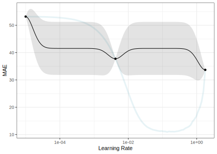
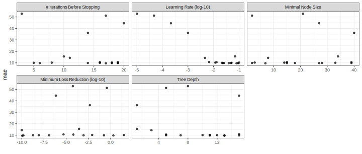
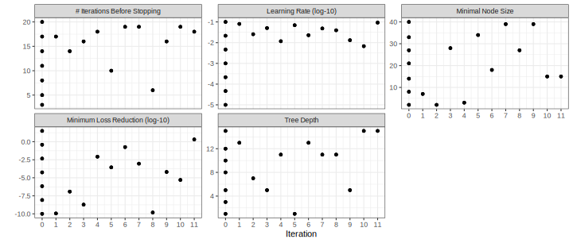
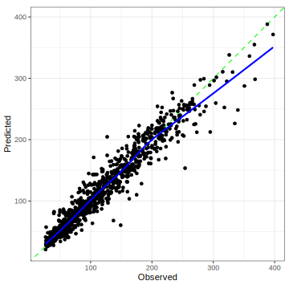

5 - Iterative Search
Advanced tidymodels
Previously - Setup
Previously - Data Usage
Our Boosting Model
We used feature hashing to generate a smaller set of indicator columns to deal with the large number of levels for the agent and country predictors.
Tree-based models (and a few others) don’t require indicators for categorical predictors. They can split on these variables as-is.
We’ll keep all categorical predictors as factors and focus on optimizing additional boosting parameters.
Our Boosting Model
lgbm_spec <-
boost_tree(trees = 1000, learn_rate = tune(), min_n = tune(),
tree_depth = tune(), loss_reduction = tune(),
stop_iter = tune()) %>%
set_mode("regression") %>%
set_engine("lightgbm", num_threads = 1)
lgbm_wflow <- workflow(avg_price_per_room ~ ., lgbm_spec)
lgbm_param <-
lgbm_wflow %>%
extract_parameter_set_dials() %>%
update(learn_rate = learn_rate(c(-5, -1)))Iterative Search
Instead of pre-defining a grid of candidate points, we can model our current results to predict what the next candidate point should be.
Suppose that we are only tuning the learning rate in our boosted tree.
We could do something like:
and use this to predict and rank new learning rate candidates.
Iterative Search
A linear model probably isn’t the best choice though (more in a minute).
To illustrate the process, we resampled a large grid of learning rate values for our data to show what the relationship is between MAE and learning rate.
Now suppose that we used a grid of three points in the parameter range for learning rate…
A Large Grid
A Three Point Grid
Gaussian Processes and Optimization
We can make a “meta-model” with a small set of historical performance results.
Gaussian Processes (GP) models are a good choice to model performance.
- It is a Bayesian model so we are using Bayesian Optimization (BO).
- For regression, we can assume that our data are multivariate normal.
- We also define a covariance function for the variance relationship between data points. A common one is:
\[\operatorname{cov}(\boldsymbol{x}_i, \boldsymbol{x}_j) = \exp\left(-\frac{1}{2}|\boldsymbol{x}_i - \boldsymbol{x}_j|^2\right) + \sigma^2_{ij}\]
Predicting Candidates
The GP model can take candidate tuning parameter combinations as inputs and make predictions for performance (e.g. MAE)
- The mean performance
- The variance of performance
The variance is mostly driven by spatial variability (the previous equation).
The predicted variance is zero at locations of actual data points and becomes very high when far away from any observed data.
Your turn
Your GP makes predictions on two new candidate tuning parameters.
We want to minimize MAE.
Which should we choose?
03:00
GP Fit (ribbon is mean +/- 1SD)
Choosing New Candidates
This isn’t a very good fit but we can still use it.
How can we use the outputs to choose the next point to measure?
Acquisition functions take the predicted mean and variance and use them to balance:
- exploration: new candidates should explore new areas.
- exploitation: new candidates must stay near existing values.
Exploration focuses on the variance, exploitation is about the mean.
Acquisition Functions
We’ll use an acquisition function to select a new candidate.
The most popular method appears to be expected improvement (EI) above the current best results.
- Zero at existing data points.
- The expected improvement is integrated over all possible improvement (“expected” in the probability sense).
We would probably pick the point with the largest EI as the next point.
(There are other functions beyond EI.)
Expected Improvement
Iteration
Once we pick the candidate point, we measure performance for it (e.g. resampling).
Another GP is fit, EI is recomputed, and so on.
We stop when we have completed the allowed number of iterations or if we don’t see any improvement after a pre-set number of attempts.
GP Fit with four points
Expected Improvement
GP Evolution

Expected Improvement Evolution

BO in tidymodels
We’ll use a function called tune_bayes() that has very similar syntax to tune_grid().
It has an additional initial argument for the initial set of performance estimates and parameter combinations for the GP model.
Initial grid points
initial can be the results of another tune_*() function or an integer (in which case tune_grid() is used under to hood to make such an initial set of results).
We’ll run the optimization more than once, so let’s make an initial grid of results to serve as the substrate for the BO.
I suggest at least the number of tuning parameters plus two as the initial grid for BO.
An Initial Grid
reg_metrics <- metric_set(mae, rsq)
set.seed(12)
init_res <-
lgbm_wflow %>%
tune_grid(
resamples = hotel_rs,
grid = nrow(lgbm_param) + 2,
param_info = lgbm_param,
metrics = reg_metrics
)
show_best(init_res, metric = "mae") %>% select(-.metric, -.estimator)
#> # A tibble: 5 × 9
#> min_n tree_depth learn_rate loss_reduction stop_iter mean n std_err .config
#> <int> <int> <dbl> <dbl> <int> <dbl> <int> <dbl> <chr>
#> 1 33 12 0.0215 8.25e- 9 5 10.1 10 0.182 Preprocessor1_Model6
#> 2 14 10 0.1 3.16e+ 1 8 10.2 10 0.192 Preprocessor1_Model3
#> 3 8 3 0.00464 1 e-10 11 14.4 10 0.305 Preprocessor1_Model2
#> 4 40 1 0.001 4.64e- 3 14 36.1 10 0.408 Preprocessor1_Model7
#> 5 27 15 0.000215 6.81e- 7 20 44.5 10 0.371 Preprocessor1_Model5BO using tidymodels
ctrl_bo <- control_bayes(verbose_iter = TRUE) # <- for demonstration
set.seed(15)
lgbm_bayes_res <-
lgbm_wflow %>%
tune_bayes(
resamples = hotel_rs,
initial = init_res, # <- initial results
iter = 20,
param_info = lgbm_param,
control = ctrl_bo,
metrics = reg_metrics
)
#> Optimizing mae using the expected improvement
#>
#> ── Iteration 1 ───────────────────────────────────────────────────────
#>
#> i Current best: mae=10.05 (@iter 0)
#> i Gaussian process model
#> ✓ Gaussian process model
#> i Generating 5000 candidates
#> i Predicted candidates
#> i min_n=7, tree_depth=13, learn_rate=0.0802, loss_reduction=1.13e-10, stop_iter=17
#> i Estimating performance
#> ✓ Estimating performance
#> ♥ Newest results: mae=9.599 (+/-0.135)
#>
#> ── Iteration 2 ───────────────────────────────────────────────────────
#>
#> i Current best: mae=9.599 (@iter 1)
#> i Gaussian process model
#> ✓ Gaussian process model
#> i Generating 5000 candidates
#> i Predicted candidates
#> i min_n=2, tree_depth=7, learn_rate=0.0255, loss_reduction=1.22e-07, stop_iter=14
#> i Estimating performance
#> ✓ Estimating performance
#> ⓧ Newest results: mae=9.895 (+/-0.183)
#>
#> ── Iteration 3 ───────────────────────────────────────────────────────
#>
#> i Current best: mae=9.599 (@iter 1)
#> i Gaussian process model
#> ✓ Gaussian process model
#> i Generating 5000 candidates
#> i Predicted candidates
#> i min_n=28, tree_depth=5, learn_rate=0.0507, loss_reduction=1.91e-09, stop_iter=16
#> i Estimating performance
#> ✓ Estimating performance
#> ⓧ Newest results: mae=9.975 (+/-0.186)
#>
#> ── Iteration 4 ───────────────────────────────────────────────────────
#>
#> i Current best: mae=9.599 (@iter 1)
#> i Gaussian process model
#> ✓ Gaussian process model
#> i Generating 5000 candidates
#> i Predicted candidates
#> i min_n=3, tree_depth=11, learn_rate=0.0117, loss_reduction=0.00846, stop_iter=18
#> i Estimating performance
#> ✓ Estimating performance
#> ⓧ Newest results: mae=10.25 (+/-0.194)
#>
#> ── Iteration 5 ───────────────────────────────────────────────────────
#>
#> i Current best: mae=9.599 (@iter 1)
#> i Gaussian process model
#> ✓ Gaussian process model
#> i Generating 5000 candidates
#> i Predicted candidates
#> i min_n=34, tree_depth=1, learn_rate=0.0695, loss_reduction=0.00028, stop_iter=10
#> i Estimating performance
#> ✓ Estimating performance
#> ⓧ Newest results: mae=15.57 (+/-0.254)
#>
#> ── Iteration 6 ───────────────────────────────────────────────────────
#>
#> i Current best: mae=9.599 (@iter 1)
#> i Gaussian process model
#> ✓ Gaussian process model
#> i Generating 5000 candidates
#> i Predicted candidates
#> i min_n=18, tree_depth=13, learn_rate=0.0229, loss_reduction=0.181, stop_iter=19
#> i Estimating performance
#> ✓ Estimating performance
#> ⓧ Newest results: mae=9.882 (+/-0.166)
#>
#> ── Iteration 7 ───────────────────────────────────────────────────────
#>
#> i Current best: mae=9.599 (@iter 1)
#> i Gaussian process model
#> ✓ Gaussian process model
#> i Generating 5000 candidates
#> i Predicted candidates
#> i min_n=39, tree_depth=11, learn_rate=0.0485, loss_reduction=0.000906, stop_iter=19
#> i Estimating performance
#> ✓ Estimating performance
#> ⓧ Newest results: mae=9.883 (+/-0.169)
#>
#> ── Iteration 8 ───────────────────────────────────────────────────────
#>
#> i Current best: mae=9.599 (@iter 1)
#> i Gaussian process model
#> ✓ Gaussian process model
#> i Generating 5000 candidates
#> i Predicted candidates
#> i min_n=27, tree_depth=11, learn_rate=0.0396, loss_reduction=1.54e-10, stop_iter=6
#> i Estimating performance
#> ✓ Estimating performance
#> ⓧ Newest results: mae=9.811 (+/-0.195)
#>
#> ── Iteration 9 ───────────────────────────────────────────────────────
#>
#> i Current best: mae=9.599 (@iter 1)
#> i Gaussian process model
#> ✓ Gaussian process model
#> i Generating 5000 candidates
#> i Predicted candidates
#> i min_n=39, tree_depth=5, learn_rate=0.0131, loss_reduction=6.45e-05, stop_iter=16
#> i Estimating performance
#> ✓ Estimating performance
#> ⓧ Newest results: mae=10.55 (+/-0.152)
#>
#> ── Iteration 10 ──────────────────────────────────────────────────────
#>
#> i Current best: mae=9.599 (@iter 1)
#> i Gaussian process model
#> ✓ Gaussian process model
#> i Generating 5000 candidates
#> i Predicted candidates
#> i min_n=15, tree_depth=15, learn_rate=0.00677, loss_reduction=5.01e-06, stop_iter=19
#> i Estimating performance
#> ✓ Estimating performance
#> ⓧ Newest results: mae=10.73 (+/-0.214)
#>
#> ── Iteration 11 ──────────────────────────────────────────────────────
#>
#> i Current best: mae=9.599 (@iter 1)
#> i Gaussian process model
#> ✓ Gaussian process model
#> i Generating 5000 candidates
#> i Predicted candidates
#> i min_n=15, tree_depth=15, learn_rate=0.0929, loss_reduction=2.08, stop_iter=18
#> i Estimating performance
#> ✓ Estimating performance
#> ⓧ Newest results: mae=9.82 (+/-0.141)
#> ! No improvement for 10 iterations; returning current results.Best results
show_best(lgbm_bayes_res, metric = "mae") %>% select(-.metric, -.estimator)
#> # A tibble: 5 × 10
#> min_n tree_depth learn_rate loss_reduction stop_iter mean n std_err .config .iter
#> <int> <int> <dbl> <dbl> <int> <dbl> <int> <dbl> <chr> <int>
#> 1 7 13 0.0802 1.13e-10 17 9.60 10 0.135 Iter1 1
#> 2 27 11 0.0396 1.54e-10 6 9.81 10 0.195 Iter8 8
#> 3 15 15 0.0929 2.08e+ 0 18 9.82 10 0.141 Iter11 11
#> 4 18 13 0.0229 1.81e- 1 19 9.88 10 0.166 Iter6 6
#> 5 39 11 0.0485 9.06e- 4 19 9.88 10 0.169 Iter7 7Plotting BO Results
Plotting BO Results
Plotting BO Results
ENHANCE
Your turn
Let’s try a different acquisition function: conf_bound(kappa).
We’ll use the objective argument to set it.
Choose your own kappa value:
- Larger values will explore the space more.
- “Large” values are usually less than one.
Bonus points: Before the optimization is done, press <esc> and see what happens.
10:00
Notes
Stopping
tune_bayes()will return the current results.Parallel processing can still be used to more efficiently measure each candidate point.
There are a lot of other iterative methods that you can use.
The finetune package also has functions for simulated annealing search.
Finalizing the Model
Let’s say that we’ve tried a lot of different models and we like our lightgbm model the most.
What do we do now?
- Finalize the workflow by choosing the values for the tuning parameters.
- Fit the model on the entire training set.
- Verify performance using the test set.
- Document and publish the model(?)
Locking Down the Tuning Parameters
We can take the results of the Bayesian optimization and accept the best results:
best_param <- select_best(lgbm_bayes_res, metric = "mae")
final_wflow <-
lgbm_wflow %>%
finalize_workflow(best_param)
final_wflow
#> ══ Workflow ══════════════════════════════════════════════════════════
#> Preprocessor: Formula
#> Model: boost_tree()
#>
#> ── Preprocessor ──────────────────────────────────────────────────────
#> avg_price_per_room ~ .
#>
#> ── Model ─────────────────────────────────────────────────────────────
#> Boosted Tree Model Specification (regression)
#>
#> Main Arguments:
#> trees = 1000
#> min_n = 7
#> tree_depth = 13
#> learn_rate = 0.0801616272924067
#> loss_reduction = 1.13369097175613e-10
#> stop_iter = 17
#>
#> Engine-Specific Arguments:
#> num_threads = 1
#>
#> Computational engine: lightgbmThe Final Fit
We can use individual functions:
final_fit <- final_wflow %>% fit(data = hotel_train)
# then predict() or augment()
# then compute metricsRemember that there is also a convenience function to do all of this:
set.seed(3893)
final_res <- final_wflow %>% last_fit(hotel_split, metrics = reg_metrics)
final_res
#> # Resampling results
#> # Manual resampling
#> # A tibble: 1 × 6
#> splits id .metrics .notes .predictions .workflow
#> <list> <chr> <list> <list> <list> <list>
#> 1 <split [3749/1251]> train/test split <tibble [2 × 4]> <tibble [0 × 3]> <tibble [1,251 × 4]> <workflow>Test Set Results
Test set performance:

Recall that resampling predicted the MAE to be 9.599.